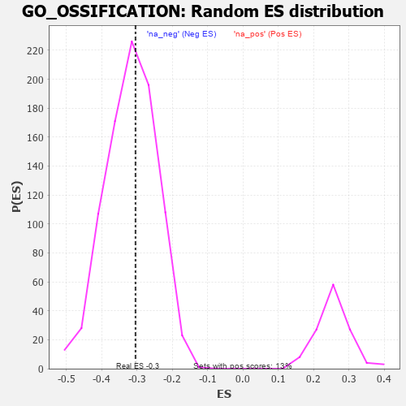

| | | Dataset | 7d |
| Phenotype | NoPhenotypeAvailable |
| Upregulated in class | na_neg |
| GeneSet | GO_OSSIFICATION |
| Enrichment Score (ES) | -0.3039184 |
| Normalized Enrichment Score (NES) | -0.95855916 |
| Nominal p-value | 0.5635739 |
| FDR q-value | 0.90448827 |
| FWER p-Value | 1.0 |
Table: GSEA Results Summary
 Fig 1: Enrichment plot: GO_OSSIFICATION
Fig 1: Enrichment plot: GO_OSSIFICATION
Profile of the Running ES Score & Positions of GeneSet Members on the Rank Ordered List
| PROBE | GENE SYMBOL | GENE_TITLE | RANK IN GENE LIST | RANK METRIC SCORE | RUNNING ES | CORE ENRICHMENT | | 1 | SIX2 | | | 40 | 3.152 | 0.0606 | No |
| 2 | TGFB3 | | | 49 | 2.654 | 0.1149 | No |
| 3 | SP3 | | | 131 | 1.391 | 0.1336 | No |
| 4 | RORB | | | 189 | 1.097 | 0.1493 | No |
| 5 | SMAD5 | | | 231 | 0.979 | 0.1645 | No |
| 6 | HGF | | | 276 | 0.870 | 0.1770 | No |
| 7 | SHOX2 | | | 288 | 0.842 | 0.1932 | No |
| 8 | TAPT1 | | | 354 | 0.743 | 0.2005 | No |
| 9 | AXIN2 | | | 383 | 0.713 | 0.2118 | No |
| 10 | MESD | | | 384 | 0.713 | 0.2266 | No |
| 11 | SUFU | | | 443 | 0.665 | 0.2331 | No |
| 12 | HIRA | | | 568 | 0.608 | 0.2301 | No |
| 13 | ID1 | | | 719 | 0.555 | 0.2226 | No |
| 14 | MEN1 | | | 1003 | 0.483 | 0.1968 | No |
| 15 | AKT1 | | | 1040 | 0.476 | 0.2022 | No |
| 16 | MEF2C | | | 1054 | 0.473 | 0.2104 | No |
| 17 | NOCT | | | 1402 | 0.409 | 0.1750 | No |
| 18 | FZD1 | | | 1574 | 0.379 | 0.1612 | No |
| 19 | WWOX | | | 1688 | 0.359 | 0.1544 | No |
| 20 | ERCC2 | | | 1712 | 0.354 | 0.1589 | No |
| 21 | LRP5 | | | 1769 | 0.342 | 0.1589 | No |
| 22 | BMP7 | | | 2107 | 0.290 | 0.1223 | No |
| 23 | REST | | | 2308 | 0.259 | 0.1023 | No |
| 24 | ANO6 | | | 2339 | 0.255 | 0.1038 | No |
| 25 | FGFR2 | | | 2895 | 0.167 | 0.0370 | No |
| 26 | ACVR1 | | | 2932 | 0.161 | 0.0358 | No |
| 27 | WNT4 | | | 3023 | 0.146 | 0.0275 | No |
| 28 | LEF1 | | | 3037 | 0.144 | 0.0288 | No |
| 29 | UFL1 | | | 3041 | 0.144 | 0.0314 | No |
| 30 | SMAD3 | | | 3303 | 0.105 | 0.0006 | No |
| 31 | SMAD1 | | | 3337 | 0.099 | -0.0016 | No |
| 32 | SMAD7 | | | 3369 | 0.093 | -0.0035 | No |
| 33 | GLI1 | | | 3489 | 0.079 | -0.0170 | No |
| 34 | NELL1 | | | 3538 | 0.070 | -0.0216 | No |
| 35 | MAPK3 | | | 3589 | 0.062 | -0.0266 | No |
| 36 | SBDS | | | 3640 | 0.053 | -0.0318 | No |
| 37 | DHX9 | | | 3693 | 0.044 | -0.0375 | No |
| 38 | NF1 | | | 3713 | 0.040 | -0.0391 | No |
| 39 | SKI | | | 3762 | 0.032 | -0.0445 | No |
| 40 | SBNO2 | | | 3774 | 0.032 | -0.0452 | No |
| 41 | SUCO | | | 3816 | 0.025 | -0.0499 | No |
| 42 | NIPBL | | | 3900 | 0.010 | -0.0602 | No |
| 43 | EXT1 | | | 3954 | 0.001 | -0.0669 | No |
| 44 | SFRP2 | | | 4065 | -0.018 | -0.0804 | No |
| 45 | CSF1 | | | 4074 | -0.019 | -0.0810 | No |
| 46 | FHL2 | | | 4222 | -0.046 | -0.0987 | No |
| 47 | WNT11 | | | 4282 | -0.056 | -0.1050 | No |
| 48 | ADRB2 | | | 4352 | -0.068 | -0.1123 | No |
| 49 | ILK | | | 4510 | -0.096 | -0.1302 | No |
| 50 | FGFR3 | | | 4656 | -0.129 | -0.1459 | No |
| 51 | OSTF1 | | | 4864 | -0.170 | -0.1686 | No |
| 52 | SMO | | | 5195 | -0.247 | -0.2052 | No |
| 53 | DDX21 | | | 5231 | -0.252 | -0.2044 | No |
| 54 | SND1 | | | 5244 | -0.256 | -0.2006 | No |
| 55 | TOB2 | | | 5337 | -0.282 | -0.2063 | No |
| 56 | SOX8 | | | 5404 | -0.296 | -0.2085 | No |
| 57 | ROR2 | | | 5626 | -0.353 | -0.2292 | No |
| 58 | JAG1 | | | 6060 | -0.494 | -0.2737 | No |
| 59 | IFT80 | | | 6135 | -0.515 | -0.2724 | No |
| 60 | ISG15 | | | 6385 | -0.608 | -0.2912 | Yes |
| 61 | TRPM4 | | | 6390 | -0.612 | -0.2790 | Yes |
| 62 | SOX2 | | | 6477 | -0.652 | -0.2763 | Yes |
| 63 | DDR2 | | | 6542 | -0.681 | -0.2702 | Yes |
| 64 | WWTR1 | | | 6631 | -0.729 | -0.2662 | Yes |
| 65 | EGFR | | | 6708 | -0.765 | -0.2599 | Yes |
| 66 | PTH1R | | | 6845 | -0.839 | -0.2596 | Yes |
| 67 | FAT4 | | | 6948 | -0.901 | -0.2538 | Yes |
| 68 | DDX5 | | | 7152 | -1.037 | -0.2579 | Yes |
| 69 | MSX2 | | | 7299 | -1.171 | -0.2520 | Yes |
| 70 | TPH1 | | | 7416 | -1.286 | -0.2399 | Yes |
| 71 | MMP13 | | | 7453 | -1.340 | -0.2165 | Yes |
| 72 | TRAF6 | | | 7818 | -2.157 | -0.2177 | Yes |
| 73 | DLX5 | | | 7845 | -2.378 | -0.1714 | Yes |
| 74 | MMP2 | | | 7875 | -2.574 | -0.1214 | Yes |
| 75 | FBN2 | | | 7906 | -2.873 | -0.0654 | Yes |
| 76 | MRC2 | | | 7944 | -3.526 | 0.0034 | Yes |
Table: GSEA details [plain text format]

Fig 2: GO_OSSIFICATION: Random ES distribution
Gene set null distribution of ES for GO_OSSIFICATION